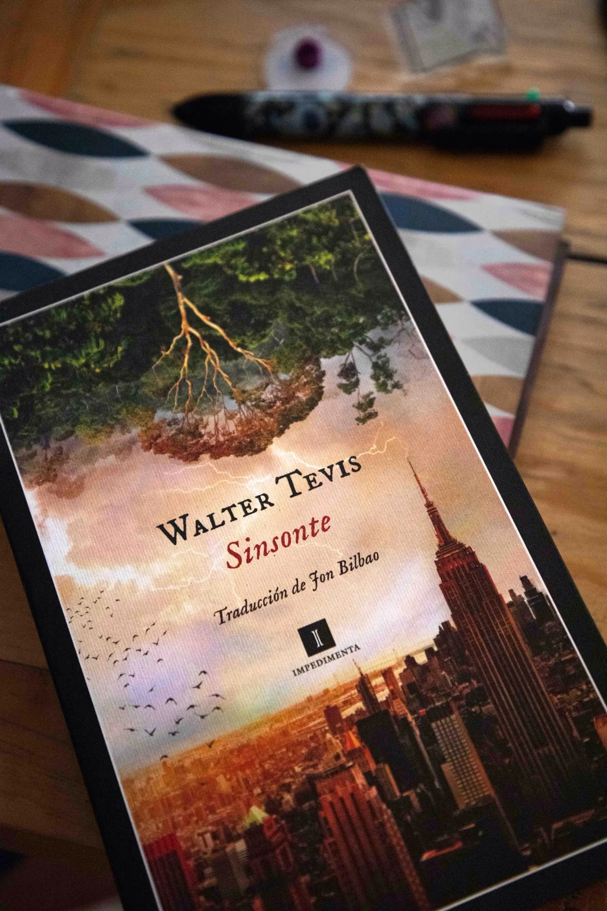

Sinsonte
Anticiparse al futuro es tarea propia de adivinos y escritores. Walter Tevis, escritor Estadounidense de ciencia ficción, nos muestra un atisbo de lo que vislumbró a través de “Sinsonte, una novela publicada hace poco más de cuarenta años que muestra un futuro que, por desfortuna, aún es posible. Sobre esta novela comenta Luisa Briones.

Imagina un futuro donde relajarte y no pensar demasiado sea una ley, donde los robots (androides) han evolucionado lo suficiente como para ser quienes desempeñan todos los trabajos, desde servir café hasta las labores del gobierno, educación y justicia.
Walter Tevis ofrece en Sinsonte un mundo distópico ambientado en Estados Unidos en el siglo XXV, en donde las leyes universales son: “Relájate, no pienses”, mantra que se repite cada vez que una situación se vuelve particularmente confusa. “El sexo rápido es lo mejor” porque no conlleva vínculos afectivos, la “Invasión de intimidad” llega tan lejos que insta al distanciamiento social (incluso mirar a alguien se considera una falta). Tevis no solo construye una ciudad futurista con autobuses mentales que te permiten viajar a un destino con solo pensarlo y el uso de “sopores” (sedantes que los humanos consumen constantemente), también propone un ambiente donde leer es ilegal y el concepto de familia no existe.
Spoffotrh, el último de la serie de robots Máquina 9, la criatura más fuerte y más inteligente jamás fabricada, programado para seguir con vida pese a sus deseos, ha sido nombrado decano de la Universidad de Nueva York, donde encuentra a Bentley, el único hombre que ha aprendido a leer. Spofforth entrega a Bentley una colección de películas mudas para que las descifre y anote sus conclusiones en un diario. Y con este pequeño acto arroja a Bentley a descubrirse mientras escribe en los diarios las ideas y preguntas que surgen de observar lo que está prohibido como una fuente de felicidad.
Publicada en 1980, Sinsonte ofrece al lector un mundo futurista cuyas problemáticas quizás tenemos ya en las manos. ¿Qué tanto de lo que somos estamos dispuestos a dejar al “juicio” de las nuevas tecnologías?
En esta historia nos entregamos a la voluntad de un dios electrónico cuya conciencia fue heredada de un hombre que sobre todo deseaba morir.
La Navegante Literaria:

Luisa María Briones Gómez (Lu). Cuando era estudiante de Ingeniería, leí que Feynman definió que un sistema no tiene una misma historia, sino todas las historias posibles, lo que me llevó a relacionar mi propia constitución como un sistema de ideas que se ha construido a través de las historias que voy leyendo, desde la ciencia ficción hasta los romances de época, sin discriminar artículos, cómics o novelas gráficas; todo lo que cae en mis manos me cuenta no sólo cómo está construido el mundo de fuera o el mundo de las posibilidades, sino elementos de mí que todavía no conozco.
Café La Fauna es un lugar para compartir un buen momento tomando café, comiendo o buscando libros en Argonáutica, su sala de lectura. Visítala en Morrow 8, Cuernavaca Centro.